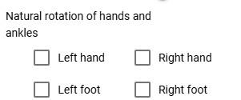
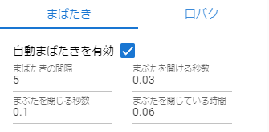
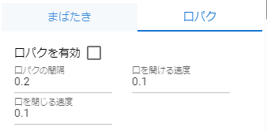

10.4. VRoid/VRM (2)
As the amount of information has increased, the page has been split.
10.4.1. Natural rotation of hands and ankles
Added from version 2.10.0.
Until now, when moving the upper arms or shins, the hands and ankles had to be rotated afterwards. By enabling this property, the hands and ankles can be moved in a natural orientation like a human body.
Both hands and feet can be enabled separately
A specific example is shown in the following figure.
However, to add finer rotation you must uncheck this.
If you uncheck the property, the rotation angle of the hand and ankle will be reflected in the IK marker.
Hint
If you find it tedious to rotate the hands and ankles after moving the arms and shins, you can check this property to automatically rotate them to a natural orientation, then uncheck it to add finer rotations.
10.4.2. Operation of hand poses
To operate the palms, open the “Arms/Hands” tab from the properties on the right and select the pose you like for the left and right hands.

You can adjust the degree of pose with the slider. More hand poses will be added in future updates.
- Ver 1.0.0:
Generally
Open
Close
Point
V-sign
Thumbs up
Grasp
- From Ver 1.0.4, the following has been supported.
Manual operation
 thumb to pinky joints
thumb to pinky jointsEach slider rotates a knuckle. The top is the 1st joint to the 2nd joint, and the bottom is the 3rd joint.
 Operation of the finger itself (between fingers, rotation of finger axis)
Operation of the finger itself (between fingers, rotation of finger axis)- The red slider adjusts the degree of opening between the fingers with the slider.The green slider rotates around the finger axis. (It’s not possible as a real human, but it’s a rotation operation that is often necessary with 3D models.)
 Base of thumb
Base of thumbYou can adjust the rotation of the base of the thumb with a circular slider. The left represents the perspective distance between the thumb and the palm, and the right mainly represents left-right rotation.
10.4.3. BlendShape
To put it simply, you can switch the facial expressions of VRoid/VRM. Open the “Blendshape” tab of the property on the right, and adjust the value of your favorite blendshape with the slider.

Blend shapes are determined for each VRM file, and the number that can be manipulated varies depending on the character.
Move the slider next to each shape key between 0 and 100.
Note
From ver 2.3.0, it has been changed so that it is registered as a key frame only when the check box is turned on. When you move the slider, the checkbox is automatically checked.
If you do not want to register a shape, uncheck it and the value of that shape will not be saved.
As a result, only the truly modified blendshapes are saved in motions and projects, reducing file size.
- Search
You can incrementally search by blendshape name. If blank, all blendshapes will be displayed.
- Dedicated and common blendshapes
- Dedicated:
Each VRM has its own shape. Even if the shape here is made into a motion or pose file described later and applied to another VRM, it may not be reproduced.
- Common:
It is a shape common to all, regardless of whether it is a VRM1.0 model or a migration model from VRM0.x. The shapes here can be reproduced in other VRMs by putting them in a motion or pose file.
The name has been changed to support VRM1.x.
Due to the VRM 1.0 specification, the behavior of SkinnedMeshRenderer’s blend shapes has been affected, and some
general-purposeshapes that used SkinnedMeshRenderer in this application no longer work. This application maintains compatibility and can be used, but since it may cause confusion, we have changed the name as follows.This app version
The shape of the SkinnedMeshRenderer
The shape of the Expression
Ver 2.0
Dedicated
Common
Ver 1.x
Generic
Dedicated
Caution
Note that
privateis reversed .Note
The original Expression only has the bare minimum of common shapes for all VRMs.
There is a possibility that the number of Expressions in other apps is small, but that is the standard state. This application emphasizes compatibility, so we have made it possible to use all blendshapes as Expressions with our own improvements.
10.4.3.1. Automatic blink
Auto blink keeps VRM blinking at the specified timing.
It keeps moving independently of the animation keyframes, so you don’t have to incorporate the opening and closing of the eyes into the keyframes from scratch with blendshapes.
- Blink interval, number of seconds the eyelids open, number of seconds closed, number of seconds closed
By specifying each of them, you can feel the expression even with the movement of the eyes.
It is on by default. If you don’t need it, uncheck “Enable automatic blink” to turn it off.
Caution
Competes with the eye blendshape. We recommend that you use one or the other.
10.4.3.2. Lip sync
VRoid/VRM keeps moving its mouth as if it is talking.
Since it continues to move independently of the animation keyframes, there is no need to incorporate the opening and closing of the mouth into keyframes from scratch using blend shapes.
- Speed to open the mouth:
Specifies how quickly the mouth changes from
aafrom 0.0 to 0.5.- Speed to close the mouth:
Specifies how quickly the mouth changes from
aafrom 0.5 to 0.0.- Lip sync interval:
Specify the time it takes to start moving again after the mouth opens and closes once. The more you have, the longer the interval will be and the less frequently you will have to move your mouth.
Default is off. It is suitable for use when enabling it and then disabling it a few seconds later in the next frame to create a scene where the character is speaking.
Hint
This feature allows you to move aa and other shapes independently while aa changes.
Caution
This function does not cause VRoid/VRM to move its mouth according to the user’s speech. It is just an auxiliary function to make VRoid/VRM appear to be talking.
10.4.4. wearing an object
You can link different objects such as FBX, Obj, Light, etc. to specific body parts of VRoid/VRM and link their movements. Open the “Attach Objects” tab in the properties on the right.

Add another object in advance.

Note
Adjust the position and rotation according to the part of the body you want to tie.
Select VRoid/VRM, select the target body part, and click the Add button.
Select the object you want to link and press the “OK” button.

Wearable objects are:
Object type |
|---|
3D objects such as FBX / OBJ |
Image |
Light |
Camera |
Effect |
Information about the attached object will be displayed.

Caution
About wearing objects in animation projects
- Example:
Equip a 3D sword object on the VRM’s right hand
Frame |
VRM |
Other objects |
|---|---|---|
1 |
move the right hand to the desired position |
Move the sword to the specified position |
2 |
wear a sword object to the right hand |
Register the position and rotation at this time to the key frame |
~ |
None |
|
9 |
move the right hand |
None |
10 |
Release the sword attached to the right hand |
Register the position and rotation at this time to the key frame |
Other object properties cannot be changed between 2 and 10 frames.
The point in the animation is that the wearing state is the same at the start and end. For example, if the 1st frame is without attachments and the 10th frame is with attachments, if you operate the frame or press the play button again, the position of the object may gradually shift.
10.4.5. Gravity settings
Even with this app, hair flutters when the VRoid/VRM moves, but you can make fine adjustments manually.
Although this is an effect only for this application, for example, you can correct the phenomenon that the skirt is turned up too much by setting this gravity.
Warning
Conflicts with the stage wind effects and settings described below. Do not use this feature when using wind.
Information on the gravity settings of bones owned by the VRM being operated is listed on the spreadsheet. The bones displayed here are:
Bones that the VRM itself has (already held during creation in VRoidStudio)
Bones held by 3D models retrofitted to VRM with tools such as the Unity editor and my work VRMOneEditor
In addition, since it should have gone through conversion with UniVRM once, it depends on the VRMSpringBone component for bone information.
Please check in advance on VRoidStudio or Unity which bones are actually located. The cells that can be changed are:
Power |
Direct strength of gravity on that bone (0 to 1) |
Direction X / Y / Z |
Directional strength of gravity on that bone (-1 to 1) |
Note
-1 for each Direction is the negative direction. For example, the Y axis will be downward. (1 means up)
Power * Directionreflects how the bones flutter due to gravity.To reload the latest information, press the load button on the toolbar.
10.4.6. Texture
You can change the settings of textures held by VRM in detail. The setting and usage of OtherObject are exactly the same.
See Texture for details.
10.4.7. Play the VRMAnimation
Similar to OtherObject’s animation, VRMAnimation can also be controlled to play within an animation project using this app. The difference from FBX etc. is that VRMAnimation is completely different from VRM, so the same motion can be reused in multiple VRMs.
Preview playback |
アニメーション登録用 |
|
|
It will play instantly. This operation is not registered in the keyframe. |
Register the keyframe after selecting “Play” or “Stop”. |


Open VRMAnimation from
Openof Pose/Motion in the3D Modeltab of the ribbon bar.Select VRMAnimation from the combo box at the top of this property panel.
Select the animation clip you want to play from the second combo box.
Adjust the playback mode, animation speed, etc. as necessary.
Play and check.
If you like, select the playback state in the animation state (for registration) and register the keyframe.
- About the placement of controls:
Combo box for the motion file name
Combo box for an animation clip
Play
Stop
Play mode selection box
seek position slider
speed slider
Set the animation state to
To seek- Rotation of this app and VRMAnimation:
The rotation direction of the VRM itself in this application and VRMAnimation is different in the Z direction. In this app, the default is for VRM to face in the negative direction of his Z. VRMAnimation, on the other hand, depends on each animation.
In order to absorb the difference in orientation as much as possible, this application reverses the Z direction only immediately after selecting VRMAnimation.
- Close VRMAnimation:
If you really want to close it, select the target file from the project settings screen and delete it.
About IK operations
You cannot manipulate IK markers while VRMAnimation is enabled.
To temporarily disable VRMAnimation, select --- from the motion file name combo box. Then you can deselect VRMAnimation.
You can now move the VRM freely by manipulating the IK marker again.
Note
If there are multiple motions in VRMAnimation, please select them.
The animation data of the 3D object is not expanded or displayed in the key frame, but only the states of play, pause, stop, and seek are registered in the key frame.
Hint
Even if you register only changing the seek position by changing the playback position as a keyframe instead of playing or stopping, you can freely play the animation of that object.
To change the motion seek position, do the following:
Move the seek position slider
Set the animation state to
To seekRegistering/updating to a keyframe
- Example:
Loaded a VRMAnimation into VRM A
Frame number
Animation state (for registration)
Seek position
1
Change playback position
0.855 seconds
2
Change playback position
0.124 seconds
Duration is 1 second.
This VRM A animates as if playing in reverse.